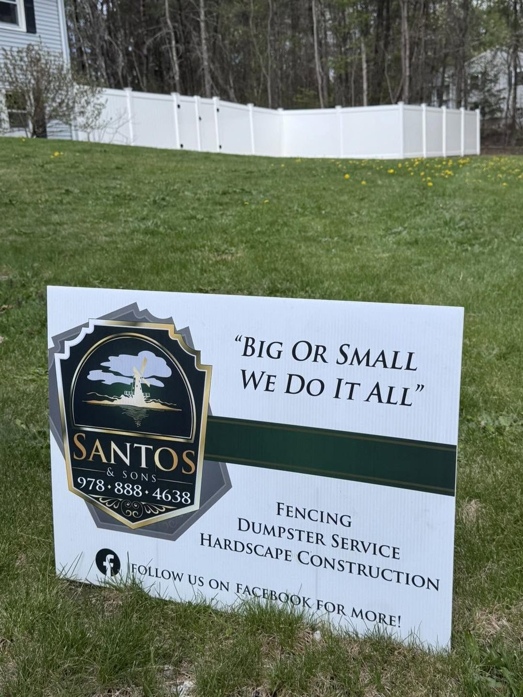
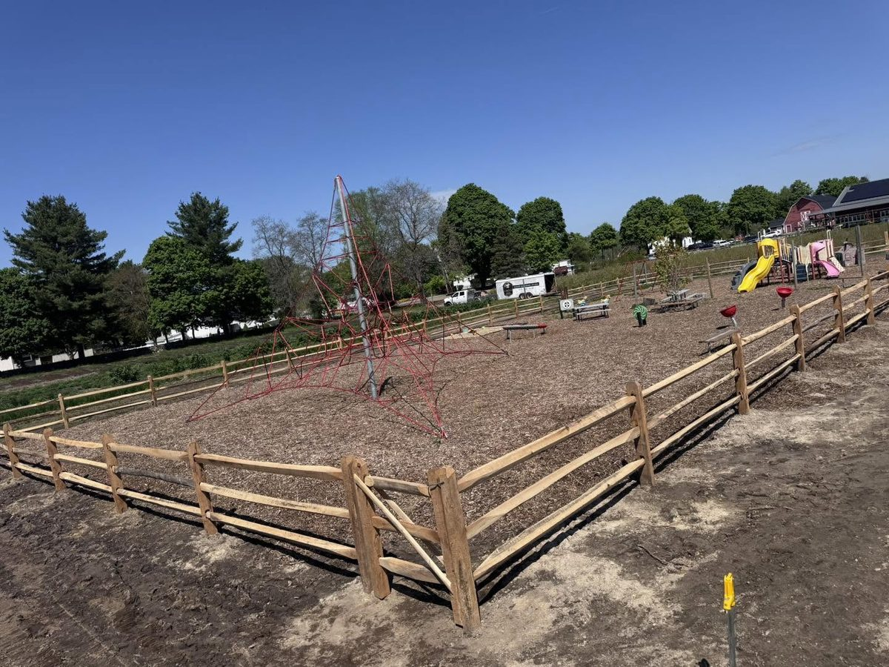

Derek Santos started Santos & Sons in Dracut in 2010 with a simple deal for his neighbors: do the job right, leave the yard cleaner than you found it, and answer the phone when it rings. Fifteen years on, that's still the whole playbook.
The "& Sons" isn't just branding — it's the family working alongside Derek on jobs across the Merrimack Valley. You'll see the crest on the truck, on the trailer, and on the sign that goes up when a job wraps. Around here, that sign means the fence is straight.

No salesmen, no call centers. The owner walks the property, measures the runs, and gives you a straight number — free.
Customers keep saying the same thing in reviews: they showed up when they said they would and finished when they said they would. That's the standard.
Old fencing hauled off, debris gone, lawn raked out. The only thing left behind is the fence — and maybe the sign, if you'll let us.

Home base is Dracut — you've probably passed the trucks on Tyler Street. From there the crew covers the surrounding Merrimack Valley for residential and commercial work alike: backyards, pool decks, farm runs, even town playgrounds.
Walk-through and estimate are free. Worst case, you learn exactly what your fence line needs.